|
|
| hard corals text index | photo index |
| Phylum Cnidaria > Class Anthozoa > Subclass Zoantharia/Hexacorallia > Order Scleractinia > Family Fungiidae |
| Tongue
mushroom coral Herpolitha limax* Family Fungiidae updated Oct 2016 Where seen? This long, often tongue-shaped mushroom hard coral is sometimes seen on many of our Southern shores. This coral is free-living as an adult (it is not attached to the surface) and large ones may be seen on in coral rubble and among living corals. Features: Skeleton longer than broad, 20-30cm long with rounded ends, though some may have rather pointed ends. Comes in a wide variety of shapes from long and narrow, oval to circular, flat or rather humped, also bomerang shaped. Specimens in T-, Y- or X- shapes are also seen. This is generally due to regeneration following damage. A prominent central furrow. Upper surface with thin lines radiating from the central furrow. Lines are parallel, discontinuous with sparse, fine 'teeth' that usually can't be seen in the field. The underside usually concave, some with radiating lines of short bumps. Veron considers it to be a colonial animal with many mouths. Numerous mouths are found in the central furrow and mouths may also be found elsewhere on the upper surface. The sparse 'tentacles' are short, slender and usually transparent, often white-tipped. These are not true tentacles but inflated portions of the tissues. These are only 'extended' at night. Colours seen include light blue, green and purple.. Sometimes confused with other long mushroom corals. Here's more on how to tell apart elongated mushroom hard corals. |
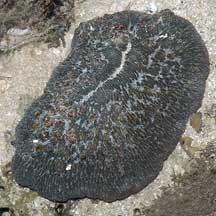 Distinct central furrow. Pulau Hantu, Feb 08 |
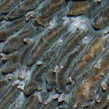 Tiny tentacles |
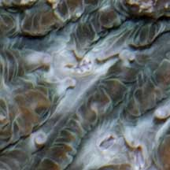 Many mouths |
|
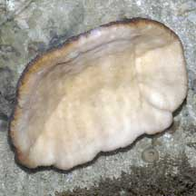 Underside concave. |
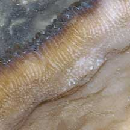 |
 Kusu Island, Jun 04 |
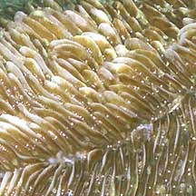 Thin overlapping discontinuous walls. |
 Tiny tentacles |
|
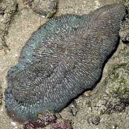 Pulau Tekukor, May 07 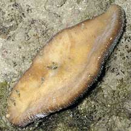 Underside |
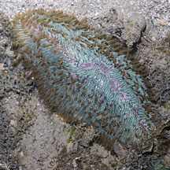 Terumbu Raya, Jun 11 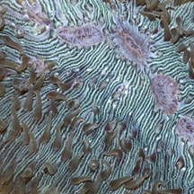 |
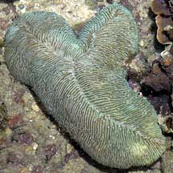 Raffles Lighthouse, Jul 06 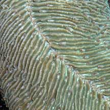 |
*Species are difficult to positively identify without close examination.
On this website, they are grouped by external features for convenience of display.
| Tongue mushroom corals on Singapore shores |
On wildsingapore
flickr
|
| Other sightings on Singapore shores |
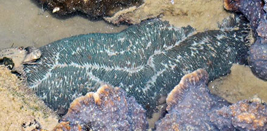 East Coast PCN, Jul 20 Photo shared by Loh Kok Sheng on facebook. |
|
Links
References
|